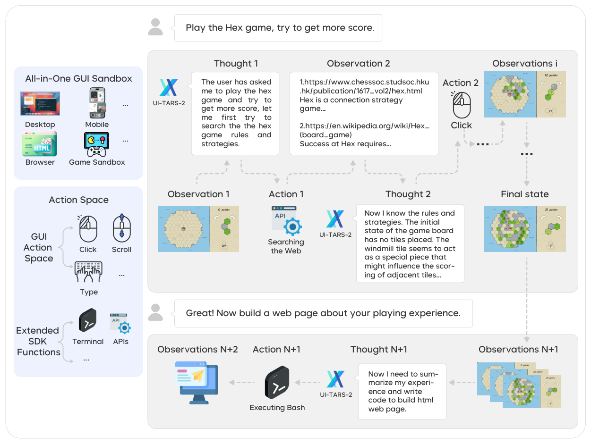
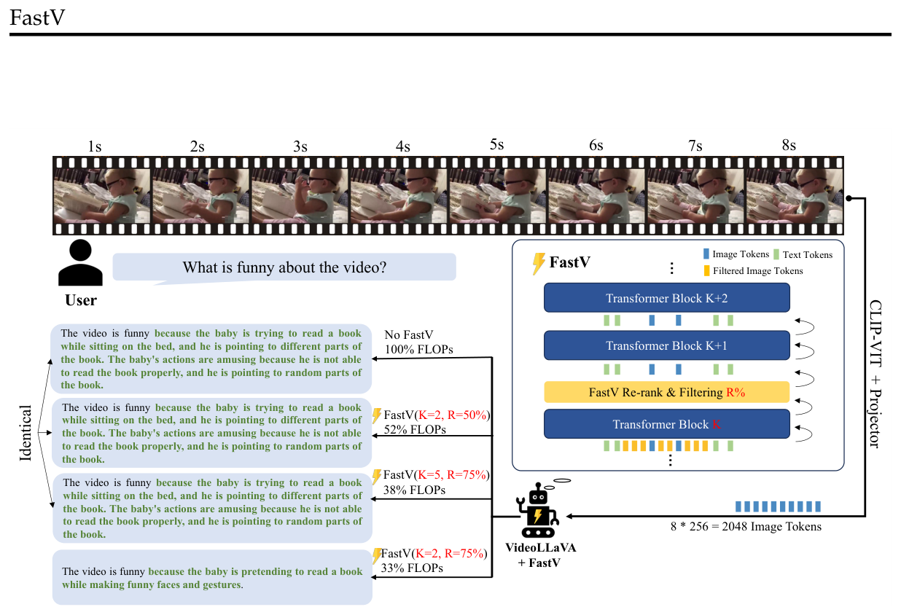
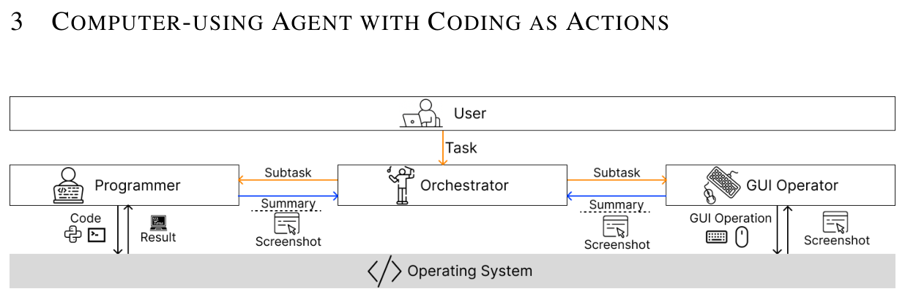
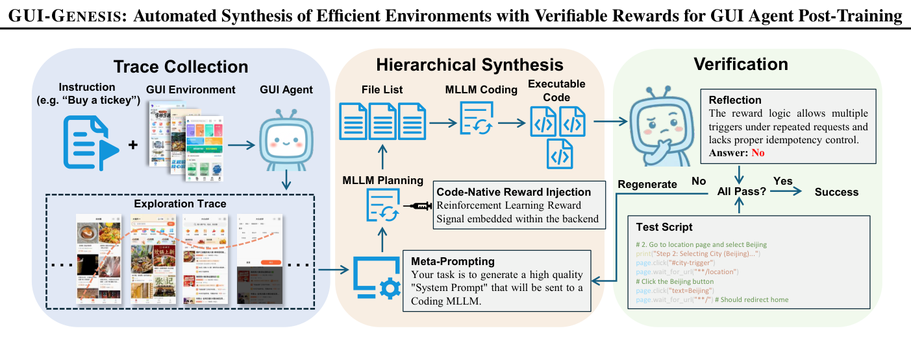

二、国内外研究现状
□ 能力方法：纯 CLI、纯 GUI 与混合能力方法
纯 CLI 能力方法
Terminal-Bench · SWE-agent · SWE-Gym · OpenClaw

优点：动作精确高效，单元测试提供可验证奖励，强化学习已规模化
不足：难以观测渲染结果；依赖命令行或 API
纯 GUI 能力方法
OSWorld · UI-TARS-2 · FastV · SnapKV


优点：以截图与键鼠为通用接口，适用于各类图形界面软件
不足：截图开销高、步数多；缺少天然可验证信号
混合能力方法
CoAct-1 · OSWorld-MCP · GUI-Genesis


优点：混合动作空间缩短轨迹；以参考应用构建可验证环境的思路出现
不足：第二种通道多为辅助；任务多仅依据结果判分
现有方法或割裂地发展单一能力，或初步混合而缺少统一范式、可信评测与可验证的训练方法